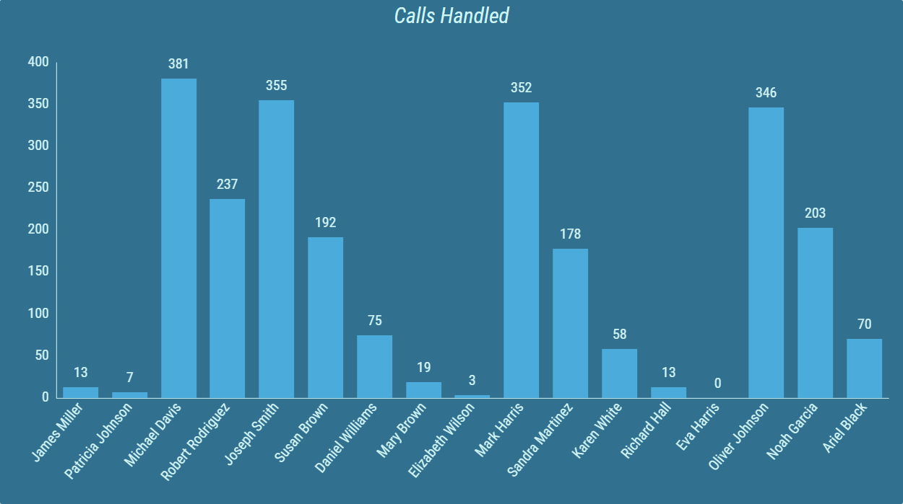
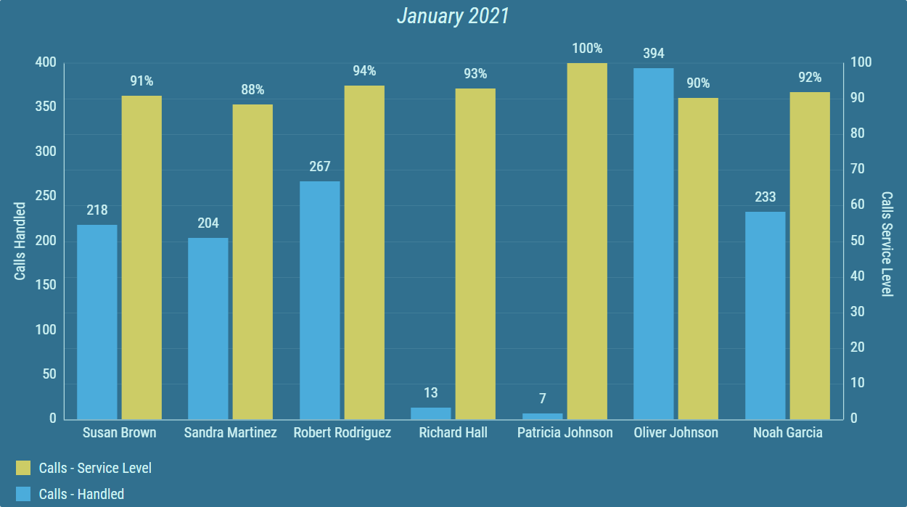
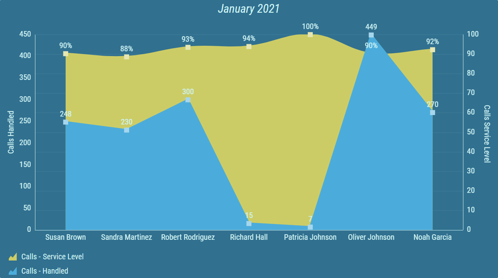
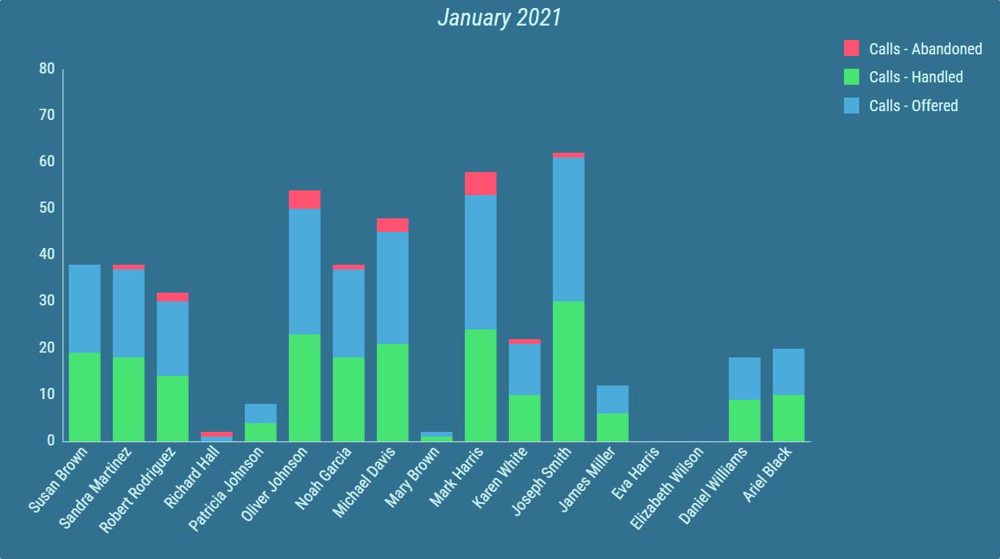
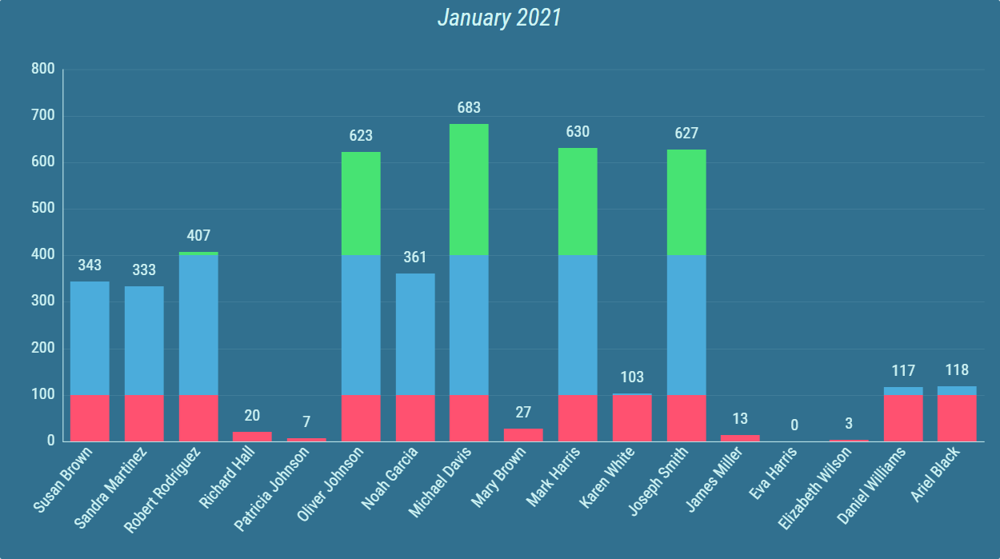
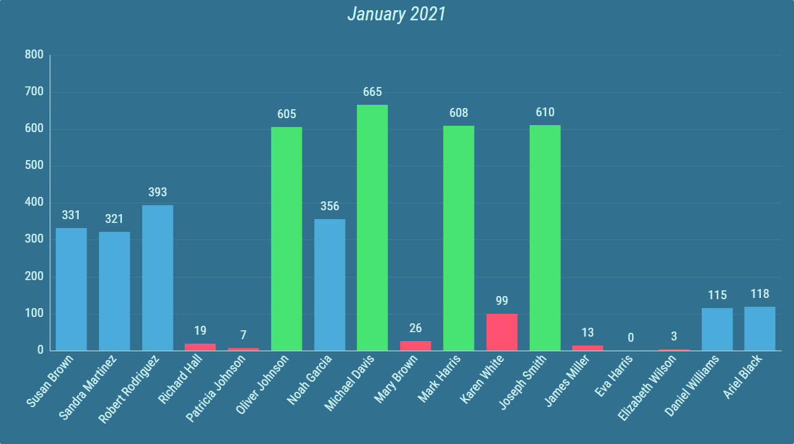

Bar/Line Chart - Grid¶
A Bar/Line Chart - Grid can display values of one or more calculations. This way, development of multiple calculations can be compared with each other.
Multiple series with various Bar/Line types and modes can be configured.A legend can be displayed, that describes the calculation and can provide additional information. The position and size of the legend can be configured.
Figure 1: Bar/Line Chart - Grid
A Bar/Line Chart - Grid consist of one horizontal axis and any number of vertical axes. The horizontal axis can be configured by selecting a specific column. Results are represented by vertical axes. Each axis can display grid lines.
Some labels on horizontal and vertical axes may be hidden, when size of the segment is not big enough to fit all labels
There are multiple ways, the results can be presented.
Figure 2: Two calculations with Bar types
Grid consisting of calculations with a Bar type set can also be configured with horizontal value axis orientation.
Figure 3: Horizontal value axis orientation

The horizontal value axis orientation supports only Bar type calculations. Calculations with any other type selected are hidden in the grid. Also, rotation of axis labels with not enough space is not possible when the horizontal value axis orientation is set.
Figure 4: Line type (blue) and Curved Line type (yellow), with vertical grid lines enabled

Figure 5: Line Area type (blue) and Curved Line Area type (yellow), with vertical grid lines enabled
Sometimes, multiple calculations provide similar results, that need to be displayed together. Results of such calculations can be stacked into one value.
Figure 6: Timeline Chart with three stacked calculations
Conditional styles can be configured for each calculation. Results are colored according to range result values falls under. This allows the user to easily see if the requirements for a specific agent were not met, or highlight exceptional results.
Figure 7: Timeline Chart with conditional styles and threshold segments color mode.
Figure 8: Timeline Chart with conditional styles and whole bar color mode.
For more information about editing this segment, see Bar/Line Chart - Grid chapter.